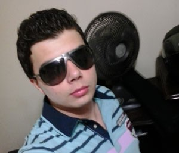

Origem
A série "Em Busca da Casa Automática", criada por Viniccius13, é um marco no YouTube brasileiro voltado para Minecraft técnico. Nela, o objetivo é construir uma base totalmente automatizada, com sistemas de redstone, farms complexas e soluções inteligentes. A série se destaca pela didática, qualidade na edição e criatividade, ensinando conceitos avançados enquanto diverte. É ideal para quem gosta de Minecraft técnico e projetos bem elaborados.
Participantes Principais
A série é gravada por Viniccius e Davi - além de outros participantes recorrentes

Viniccius e Davi são os principais participantes e anfitriões da série. Viniccius apareceu em todos os episódios, enquanto Davi esteve ausente em algumas ocasiões.
Co-participantes
Napoleon, irmão de Viniccius, é o recorrente que mais apareceu, além de ser o principal editor do canal de seu irmão. Outros participantes incluem Forever (que apareceu em 2016 e 2018), SOldierBr (que apareceu em 2017), Hawk (que apareceu em 2016), Willzy, Luis23 e Brunim Neet's (que apareceram em 2017).


.png)

O esconderijo
A série é gravada por Viniccius e Davi - além de outros participantes recorrentes
Viniccius e Davi são os principais participantes e anfitriões da série. Viniccius apareceu em todos os episódios, enquanto Davi esteve ausente em algumas ocasiões.